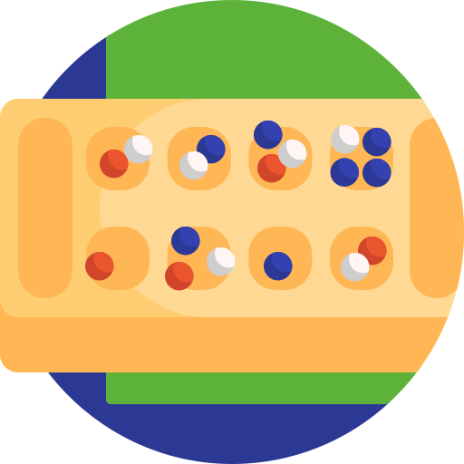

Billiards Action Webserver

Description:
The Billiards Action Web Server is a full-stack project that animates a pool shot. By adjusting the angle and power of the cue ball’s strike, the server dynamically determines which balls sink into the pockets, providing the user with a realistic and interactive billiards experience.
This game has a C library that manages the various objects that would be on a pool table such as still balls, rolling balls, holes, a table, 4 cushions surrounding the table, and a cue stick. Memory is allocated for all these objects that are defined as enums and structs to account for varying coordinations.
Then Python and SQLite act as a way to create databases and tables to save elements of the game such as time, players, shot #, and ball state (rolling, still, not on table, etc…)
The front end uses HTML to structure the page with input fields, buttons, and an SVG of the pool table. As well as CSS creating a user-friendly interface. The JavaScript is used to handle user interactions through event listeners, drawing a line from the cue ball to the cursor to indicate shot direction and length/power, and sending data like Game Name, Player names, and shot velocity to the server via POST requests when action buttons are clicked.
Languages/Tools:


Reflection:
| Learning Outcomes | Improvements |
| A strong backend with no memory leaks ensures a better overall project and a nicer user experience. |
Lacking logic surrounding game rules that needs to be implemented. |
| Python acts as the glue between a C backend and front-end JavaScript to create a responsive game that stores game state in relational databases. |
Working towards a server logic that allows users to compete against each other. |
| A bigger project has many moving pieces, so setting frequent deadlines is important to ensure a successful outcome. |
More visually appealing game set up on the front end. |
Digital Mancala Game
Description:
The project consists of 11 executable classes and several testing classes. Out of these, 10 classes represent individual components of the full Mancala game, which are utilized by the TextUI class. The TextUI class interacts with the MancalaGame class, which in turn relies on the Board class to manage game functionality.
With JUnit tests, I ensured that each smaller component of the program worked correctly, which made the process of testing and debugging much easier. I made JUnit tests as I developed the software to not test all at once at the end.
Languages/Tools:


View Test Document:
Reflection:
| Learning Outcomes | Improvements |
| Refactoring code is good practice for improving its cleanliness, readability, and reusability. By making code more reusable, it becomes easier to maintain and manage over time. |
Adding a GUI to make the game more user-friendly. |
| Testing in smaller parts allows for simplified debugging, detecting bugs earlier, and allows to refactor code easily. |
Adding more detailed test cases. |
| Abstraction, encapsulation, polymorphism, and inheritance |
Continue refactoring and maintaining code. |
Personal Portfolio
Description:
This portfolio website shows my interest in programming through the use of HTML, CSS, and JavaScript. It features various pages that highlight who I am, my work experiences, technical skills, projects I've completed, and a way to contact me.
My goal was to create a responsive layout that works across all screen sizes and operating systems. To achieve this, I used minimum and maximum @media queries. Additionally, I got to be creative in the design process, allowing me to reflect on my experiences.
Languages/Tools:
Reflection:
| Learning Outcomes | Improvements |
| An important first step for me was ensuring a well-structured HTML page. |
A more detailed flowchart for my internship goals. |
| Users may not know an element on the page is interactive, so anything that is needs to be obvious. |
Some elements are not aligned on different screen sizes, so improving the responsiveness of my website. |
| Basic design principles such as contrast, proximity, colour, and space. |
Continuing to get feedback when it is hosted. |